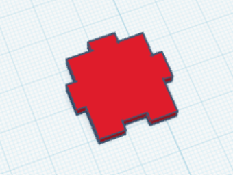
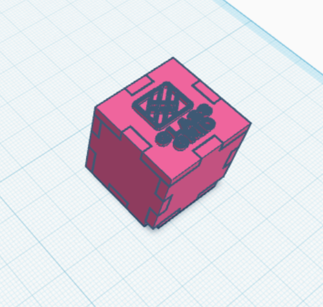

Šī gada sākumā apstrādājām tekstu ar lietotni word.
Vienu no maniem noformatētajiem darbiem, kurš noformatēts ZPD rakstīšanas stilā, var apskatīt šeit
Ar vektorgrafiku nodarbojāmies lietotnē Inkscape
Zemāk var apskatīt manu izveidoto logo, kurš tika izmantots citas komandas kuba veidošanai
3D modelēšanai izmantojām lietotni Tinkercad
Vajadzēja modelēt puzles gabaliņus, lai kopā saliktu kubu.
Manu puzles gabaliņu var apskatīt zemāk;

Kopā saliktā kuba attēlu var apskatīt zemāk;

Par kuba veidošanu, ko pieminēju iepriekš, bija jātaisa video
To var redzēt zemāk;
Pēdējā tēma, ko pašlaik esam apguvuši ir izklājlapas
Izklājlapas mēs veidojām lietotnē excel.
Vienu no manām izpildītajām izklājlapām ir apskatāma šeit
Uz dzer.html
Uz dzerdaudz.html
Uz forma.html
Uz skola.html
Uz baiti.html